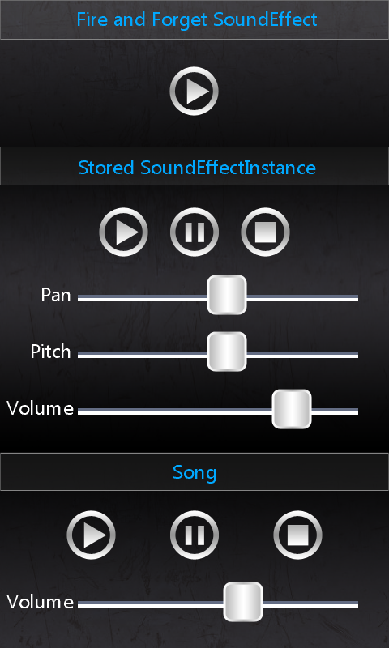

Sound and Music
Ported from Microsoft's XNA 4.0 Sound and Music sample.
Source for this sample on GitHub ↗

Play ▸Opens in a new tab. Click the game to enable audio in your browser.
About this sample
The top control plays a short sound effect once. The middle controls play a looping sound effect and let you pause, resume, stop, pan it between speakers, and change its pitch and volume. The bottom controls play a song and let you pause, resume, stop and change its volume.
Controls
| Action | Control |
|---|---|
| Play a one-shot sound | Tap or click the top Play button |
| Control the looping sound | Tap or click the middle Play, Pause and Stop buttons |
| Change pan, pitch and volume | Drag the middle three slider handles |
| Control the song | Tap or click the bottom Play, Pause and Stop buttons; drag the bottom volume slider |